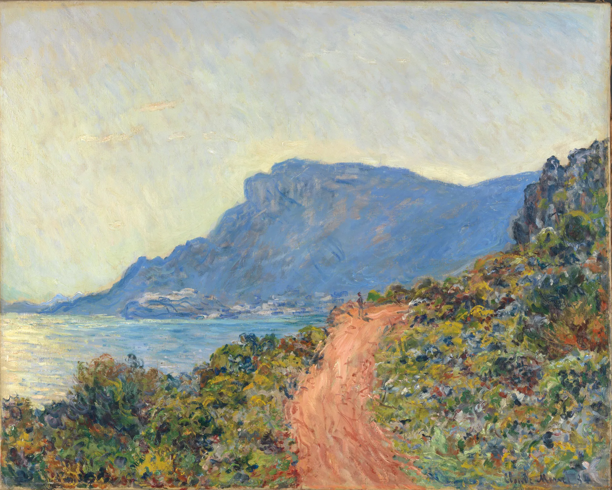

Ryan McComb
Student at Evanston Township High School and Student Fellow at VoteHub, working on the decision desk and on forecasting models and prediction market integration.
Claude Monet — La Corniche near Monaco, 1884
Student at Evanston Township High School and Student Fellow at VoteHub, working on the decision desk and on forecasting models and prediction market integration.
Claude Monet — La Corniche near Monaco, 1884